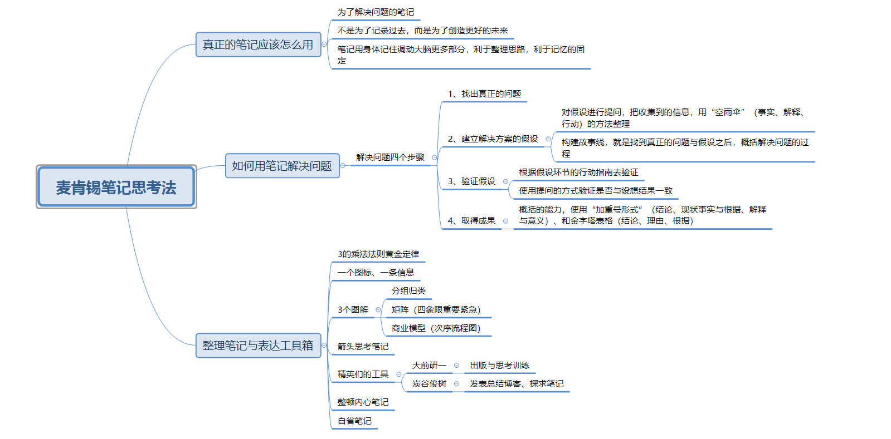

去年40岁互联网主管欧某跳楼自杀的新闻，在网上掀起滔天大浪，人人都在讨论“三四十岁自杀率”以及“职业迷茫”。很多人都说是因为遇上了职业危机、没有提前规划人生、跟不上社会的发展，但这个新闻的主人翁毕业于名牌高校，有MBA硕士学位，生前是某互联网公司技术高管，看着欧某可以算是高材生的人生履历，我不禁在思考，问题到底出在哪里？我们工作是为了什么？
这个问题再深入一些说是：
工作的本身，要求我们做些什么？我们要怎么做，才能让自己紧跟时代，不被时代淘汰？
记得李笑来曾提出过一个概念，
所有问题就像一把锁，解决这个问题的钥匙一定不在锁上，要在其他地方寻找解决方法。
也许困扰我们的并不应该一开始就寻求最终的那个对策，就像《一念之转》里古希腊哲学家爱比克泰德说：
“真正困扰我们的，并非是发生在我们身上的事情，而是我们对那件事的想法。”
怎么去思考这件事，得出什么样的对策，取决于我们的想法、思维方式。
培养、拥有一个正确、完善的思考方法或一整套思维体系，很难，难的不是培养，而是时间。需要人们花长时间去学习、去练习、习惯一套新的解决问题的专业“思考方法”。
回到最刚开始那个问题，
我们工作是为了什么？
《麦肯锡笔记思考法》告诉我们，任何工作，都是为了“解决问题”。刚好，《麦肯锡笔记思考法》就是解决“如何拥有一个正确、完善的思考方法”的那把钥匙。从全球最知名的管理咨询公司麦肯锡出来的大岛祥誉，写下了这本《麦肯锡笔记思考法》，可不是教读者怎么记笔记这么简单。用他在书中前言里的话来说，麦肯锡流笔记术“是为了解决问题，将笔记作为思考的工具和解决问题的工具”。
《麦肯锡笔记思考法》全书分为四章，给我印象最深的有以下三点：一是，告诉读者真正的笔记应该怎么用——不是为了记录过去，二是创造更好的未来；二是，如何用笔记去解决问题——解决问题的4个步骤；三是，笔记整理和成果表达的工具箱——除了在笔记上，随时随地可以用到的工具。

笔记不是为了记录过去，而是为了创建更好的未来
这是书中某一章的小标题，看到这个标题我很兴奋，感觉这个已经体现了《麦肯锡笔记思考法》的与众不同之处。
很多人都有使用笔记的习惯，但很多人只是单纯地使用笔记而已，使用笔记本成了目的，却没有将笔记和解决问题、整理思路、寻找新发现等行为结合起来。
真正的笔记应该怎么用？
笔记不只是记录过去，而是要写出接下来应该做什么，边动手记录边思考。启发读者发挥自己的主观能动性，去在笔记上整理自己的思路，找到“接下来应该这么做”的解决办法。不只是为了记录过去，可以用它来创造未来，这就是真正的笔记用法。
这里有个问题，
为什么大岛祥誉会把笔记作为麦肯锡流的思考术呢？
实在不想把“好记性不如烂笔头”提出来说，因为麦肯锡笔记思考术不是代替记性的工具，换句话说，你可以把“笔记”这两个词含义扩大化，不再仅限于我们上学时候用来记老师板书的那个笔记，或者记日常备忘的笔记。它是一个为解决问题而生的工具的代名词。
大岛祥誉说，笔记是我们的“第二大脑”，之所以使用笔记，只是因为这是我们常使用的方式，以至于理所当然，没有意识到，写笔记这个行为，其实是为了通过书写来加深思考，整理思考期间，想法更容易固定在记忆中。
试想一下，自己或者周围，存在想要解决或实现的事情，把这个当做“问题”，当你想要解决这些问题的时候，难道只在脑中思考“应该这样做”，并且思考很模糊的时候就贸然采取行动吗？不，现在有个更正确的方法，准备一个笔记，或新建一个电子笔记，把想法写在上面，利用麦肯锡流的笔记思考法，会帮你找到“解决问题”的途径，然后顺利开始行动取得成效，或者实现你的梦想。
解决问题的正确流程
解决一个问题正确的流程应该是什么？
《麦肯锡笔记思考法》中给出一个答案，分四步：
第一步，找出真正的问题，是那种本质上的问题；
第二步，建立假设，提出针对问题暂定的解决方法；
第三步，验证假设；
第四步，总结，并以此制定行动方案。
这是我见过的最简洁明了的解决问题流程。也许有些人会在头脑中对解决问题有个大致的方法，但大多数未经过长时间专业的培训，很难第一时间准确在头脑中整理出所有状况并且找到解决方法。所以一边在笔记上做记录，一边整理思考，就是《麦肯锡笔记思考法》的重点。
在工作和生活中，会发现，面对发生的问题，我们第一反应是根据显而易见的信息去找出原因，然后对此给出解决方案。但可能会出现，无论解决多少次，这个问题都会反复发生，周而复始。那是因为不是解决办法有错，而是从一开始就找错了方向，列出了一个自以为正确的原因（表面问题），针对这个原因做出了自以为正确的解决方案，最后肯定会在原地打转，周而复始的失败。
对于工作中出现的这种情况，是因为在处理问题的时候，没有做对第一步——找到本质问题，以及第二步——建立正确的假设。
正确的方法应该是，基于一个问题开始，我们要从“什么原因引起的呢”开始思考，建立一系列可能的假设，对这些原因进行分析，给自己寻找相关信息一个确定的范围，帮助我们找到根本原因，然后建立假设，为后面的验证做准备。
比方说，你有一个问题，就是想要减肥，决定“每天跑步1小时”，却坚持不下去，这时候我们要记录下所有的可能原因，也许是跑步的路线有问题，跑步的方法有问题，跑步的时间有问题等等，然后针对记录下来的这么多选项，一一做排除，筛选出可能性最高的一个。
大岛祥誉在这里介绍了一个“空雨伞”的方法，就是对每一个选项根据“事实、解释、行动”分类整理，如果对路线自己很满意，跑步的方法也没有对身体造成影响，那最有可能的就是时间存在问题，那我们也就能分析出“跑步的时间有问题”就是导致你坚持不下去的根本原因。
那接下来，我们解决问题的目标就是”更改跑步的时间“，再接下来，继续问”什么时间跑步比较好呢“”跑多长时间比较好呢“等等进行验证，建立起这些符合问题本质的问题，才能引导我们走往正确的结果。
任何人都可用的思维工具箱
大岛祥誉在《麦肯锡笔记思考法》里介绍了4种笔记，即麦肯锡原创笔迹、方格笔记、大前研一的特制方格笔记、横线笔记。在解决问题流程里分别用上了其中某种笔记，不过在我看来，领悟和学会书中提到的解决问题四步法是最重要的，至于使用何种笔记本，都是其次。养成解决问题的正确思维路径，任何东西，不限于笔记、日记、涂鸦、脑图，都可以变成解决问题的工具。切记，这些都是工具而已，真正重要的是哪个正确的思维方式和路径。
书中任何的方法和技巧都可以看做抛砖引玉，真正的意思并不是教一个固定的制式，我们更需要去发挥主观能动性，去思考如何利用所学的这些制式，创造适合自己的思考方式。
笔记不再是单纯的记录工具，我们可以抓住一切机会提高自己，大岛祥誉还介绍了很多实用的方法和工具，比如“加重号形式”和“金字塔表格”可以用在工作PPT里，提高概括能力，更精准地表达关键信息，比如矩阵模型，除了用在信息收集中，在时间管理上同样适用，比如换工作时使用的3C框架笔记术，帮助自己准确把握公司需求和市场变化，思考自己应采取的行动，做出可观而且合理的选择。
除此之外，自省笔记和整顿内心的笔记，更多的是为自己内心服务的思绪整理，了解自己的状态，整理糟糕的心态，做出正确的选择。
总结
读完《麦肯锡笔记思考法》，你会发现笔记方法可能不足以立马改变你的人生，但只要真切领悟和学习到书中传递的思考方式，多去琢磨和实践，为自己的日常生活和工作中插上名为“独立思考”的导航旗帜，你不会担忧所谓的“职场危机”，或者未来任何未知的变化，因为你知道如何在问题发生时，淡定地思考自己应采取的行动，做出合理且正确的选择。终有一天，你会发现，已成为理想中最好的自己。